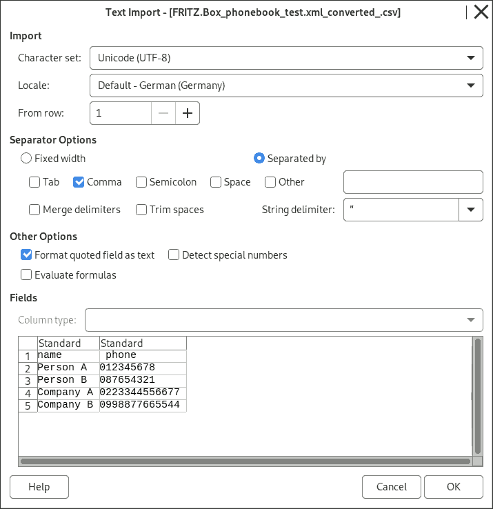
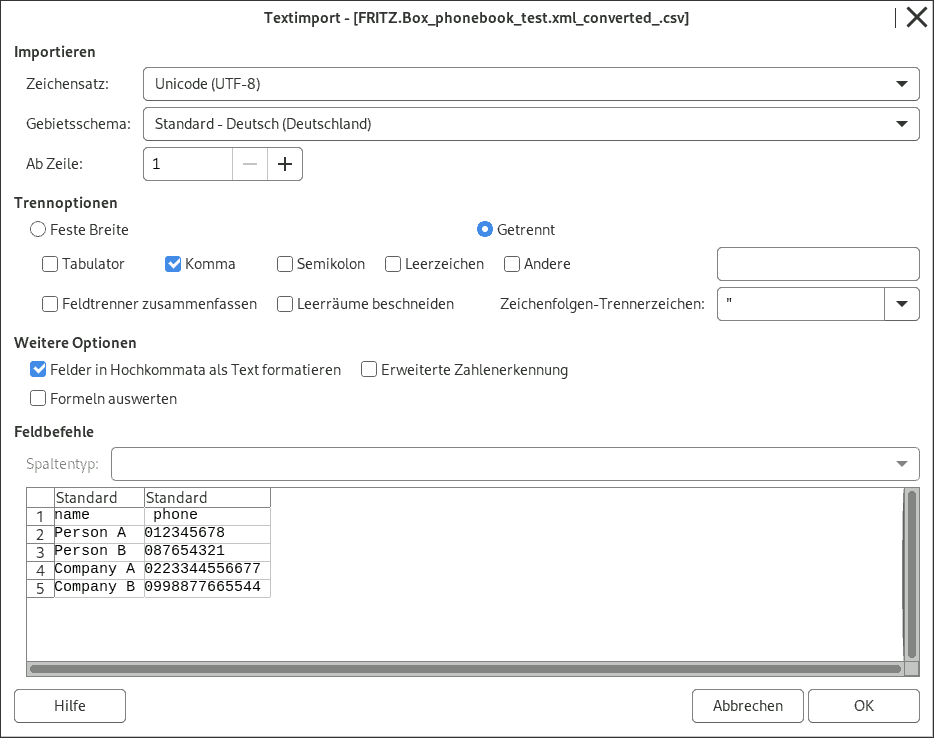

Full Data-Privacy : because directly converted inside of your Browser: no server, no cloudVoller Datenschutz : da direkt in ihrem Browser konvertiert wird: ohne Server, ohne cloud
Privacy
You Privacy are keept: This Page works just on your computer (or offline). Your Data will stay only on your own local computer. No Cloud, no Server. It is just pure local JavaScript-Code in your Browser.
You are still unsure, using this?: My Security-Advise:
Option A:
Change to Privat-Mode ( so called inside Firefox) or Incognito-Mode ( called name inside of e.g. Chrome,..) inside your Browser and open again this page. Faster: Click here with right mouse-click and select "open Link in new private window"/ "open in new private Tab" and click change to Tab (at bottom)
go offline (= disconnect from Internet )
Convert your file
Important last Step: Close ALL Privacy/Incognito-Mode window afterwards, to clean up the whole session.
save page in your Browser (press hotkey STRG+S - or - e.g.: ☰ Menue File → Save Page)
go offline (= disconnect from Internet )
open to your Download folder
open the downloaded .html file at your computer. It should be automatically open in your browser (e.g. Firefox, Chrome,..).
Datenschutz
Diese Seite arbeitet als offline-Programm (reines JavaScript im Browser). Anonymität, Datenschutz ist daher gewahrt. Ihre Daten bleiben nur auf ihren Computer. Keine Cloud, kein Server. Es ist reines, lokal ausgeführtes JavaScript. Immernoch unsicher das hier zu nutzen?: Mein Sicherheits-Ratschlag:
Der erste Gedanke ist: Einfach trennen vom Internet beim umwandeln der Datei und die Seite gleich wieder schließen. Das reicht aber nicht ganze aus. Ein böser Dienst könnten mittels Cookies (u.ä.) ihre Daten zwischenspeichern, und bei einen späteren erneueten Aufruf (wenn Sie wieder was wandeln möchte), ihre Daten dann absenden.
Option A:
Wechseln in den Privat-Modus (so heißt es in Firefox) oder Inkognito-Modus ( so heißt es in z.B. Chrome,..) Ihres Internet-Browser und diese Seite erneut öffnen. Schneller: Hier klicken mit rechter Maustasten und dann auswählen (oder lange drücken bei Touchscreens): "Link in neuem privaten Fenster öffnen"/ "in neuem privaten Tab öffnen" und klicken auf in Tab wechsel (unten)
gehen Sie offline (= trennen Sie die Verbindung zum Internet)
wandeln Sie nun Ihre Datei um
Wichtiger letzter Schritt: Schließen Sie ALLE ihre Privat/Inkognito-Modus Fenster dannach. Nur so kann die ganze sogenannte Sitzung gelöscht, also wirklich beendet werden.
Seite speichern in ihren Internet-Browser w√§hlen (Tastenkombination STRG+S - oder - z.B.: ☰ Men√º Datei → Seite speichern)
gehen Sie offline (= trennen Sie die Verbindung zum Internet)
öffnen Sie den Download Ordner
öffnen Sie die runtergeladenen .html Datei auf ihren Computer. Diese sollte sich automatisch in ihren Internet-browser (z.B. Firefox, Chrome,..) öffnen.
Help: open .csv in LibreOfficeHilfe: öffne .csv in Libreoffice
How to open the .csv file in LibreOffice
Please select comma as seperator.
Under other options: Please select Format quoted fields as text (otherwise the phone-Number may miss the beginning 0 <-- at least in LibreOffice (version 7.4.7.2)-->)

So öffnet man die .csv Datei in LibreOffice
Bitte als Trenner Komma auswählen.
Unter weitere Optionen: Bitte anklicken von Felder in Hochkommata als Text formatieren (ansonsten könnte bei der Telefon-nummer die 0 am Anfang fehlen )

About this ServiceÜber diesen Dienst / Seite
Description:
This is a Web-App, or call it online convert-Service. Converted can be phonebook from or to the a Internet-Router, called name Fritzbox.
Possible to convert:
Fritzbox .xml to .csv
.csv to Fritzbox .xml
Other functions:
It's running in directly your browser. ( No need of installation. No server. No Cloud. Only local Programm-Code. )
open the .csv file in your Office Programm (e.g. LibreOffice).
separated multiple .csv files can be merged here, before converted.
(General computer knowledge: How To select multiple files on any computer system: You can select multiple files by press and hold STRG while file selection, or work with ⇧ Shift (on first and last file), or with drag'n'drop).
Dies ist eine Web-App, oder nenne es online konvertier Dienst. Umgewandelt werden können Telefonbücher vom oder zu diesen Internet-Router, der Fritzbox genannt wird.
Möglich umzuwandeln ist:
Fritzbox .xml zu .csv
.csv zu Fritzbox .xml
Weitere Funktionen:
Es läuft direkt im Browser. ( Es ist keine Installtion nötig. Kein Server. Keine Cloud. Nur lokal ausgeführter Programmcode. )
öffne die .csv Dateien in Ihren Office Programm (z.B. LibreOffice).
Mehrere .csv Dateien können ausgewählt und vorher zusammengefügt werden (optional), vor den umwandeln.
(Allgemeines Computer wissen: Wie man mehrer Dateien an Computer System auswählt: Sie können mehrer Dateien auswählen über das drücken und halten der Taste STRG beim der Datei auswahl, oder sie arbeiten mit Taste ⇧ Shift (auf der ersten und letzten Datei), oder mit der Funktion drag'n'drop).